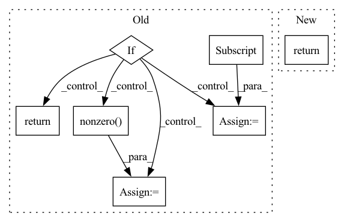

Pattern ID :24200

Before Change
adj = adj.T
if isinstance(adj, Tensor):
return dense_to_sparse(adj)
else:
idxs = np.nonzero(adj)
edge_index = np.stack(idxs)
edge_weights = adj[idxs]
return edge_index, edge_weights
def edge_index_to_adj(edge_index: TensArray,
After Change
edge_index = backend.stack(index, 0)
return edge_index, edge_attr
def edge_index_to_adj(edge_index: TensArray,
In pattern: SUPERPATTERN
Frequency: 3
Non-data size: 7
Instances
Fragment ID: 75254732
Project Name: torchspatiotemporal/tsl
Commit Name: 50089afdf23de12eb6d11e9d5e7e64d949d45611
Time: 2022-08-18
Author: ivan.marisca@hotmail.it
File Name: tsl/ops/connectivity.py
M Class Name: AnonimousClass
N Class Name: AnonimousClass
M Method Name: adj_to_edge_index(2)
N Method Name: adj_to_edge_index(1)
M Parent Class:
N Parent Class:
M File Name: tsl/ops/connectivity.py
N File Name: tsl/ops/connectivity.py
M Start Line: 92
M End Line: 114
N Start Line: 106
N End Line: 145
'>
Before Change
num_entities: Optional[int] = None,
) -> torch.FloatTensor: // noqa: D102
// Sanity check
if label_smoothing:
raise UnsupportedLabelSmoothingError(self)
// determine positive; do not check with == since the labels are floats
pos_mask = labels > 0.5
// get indices of positives, shape: (nnz, ndim)
batch_ind = pos_mask.nonzero()[:, 0]
// select rows of negatives
negative_scores = predictions[batch_ind]
// select positive scores
positive_scores = predictions[pos_mask]
return self(pos_scores=positive_scores, neg_scores=negative_scores)
// docstr-coverage: inherited
def process_slcwa_scores(
After Change
predictions = predictions - pos_mask.type_as(predictions) * self.margin
// divide by temperature
predictions = predictions / self.inverse_softmax_temperature
return super().process_lcwa_scores(
predictions=predictions,
labels=labels,
label_smoothing=label_smoothing,
'>
Fragment ID: 75254729
Project Name: pykeen/pykeen
Commit Name: d7ee986026065997398ab72152f0365224d9e374
Time: 2022-05-17
Author: berrendorf@dbs.ifi.lmu.de
File Name: src/pykeen/losses.py
M Class Name: InfoNCELoss
N Class Name: InfoNCELoss
M Method Name: process_lcwa_scores(5)
N Method Name: process_lcwa_scores(5)
M Parent Class: CrossEntropyLoss
N Parent Class: SetwiseLoss
M File Name: src/pykeen/losses.py
N File Name: src/pykeen/losses.py
M Start Line: 1358
M End Line: 1368
N Start Line: 1235
N End Line: 1245
'>
Before Change
adj = adj.T
if isinstance(adj, Tensor):
return dense_to_sparse(adj)
else:
idxs = np.nonzero(adj)
edge_index = np.stack(idxs)
edge_weights = adj[idxs]
return edge_index, edge_weights
def edge_index_to_adj(edge_index: TensArray,
After Change
edge_index = backend.stack(index, 0)
return edge_index, edge_attr
def edge_index_to_adj(edge_index: TensArray,
'>
Fragment ID: 75254730
Project Name: torchspatiotemporal/tsl
Commit Name: f28e5a2fddc34eeb90a13c113512c8ab12b6138b
Time: 2022-07-20
Author: ivan.marisca@hotmail.it
File Name: tsl/ops/connectivity.py
M Class Name: AnonimousClass
N Class Name: AnonimousClass
M Method Name: adj_to_edge_index(2)
N Method Name: adj_to_edge_index(1)
M Parent Class:
N Parent Class:
M File Name: tsl/ops/connectivity.py
N File Name: tsl/ops/connectivity.py
M Start Line: 92
M End Line: 114
N Start Line: 106
N End Line: 145